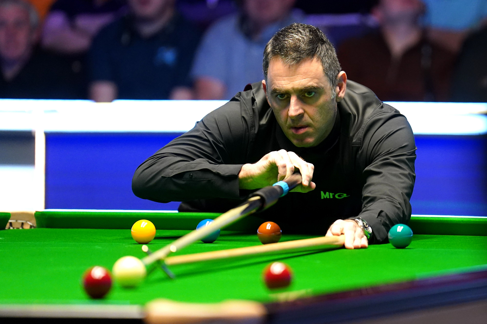
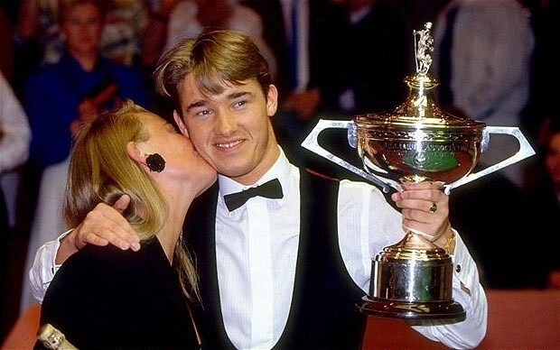
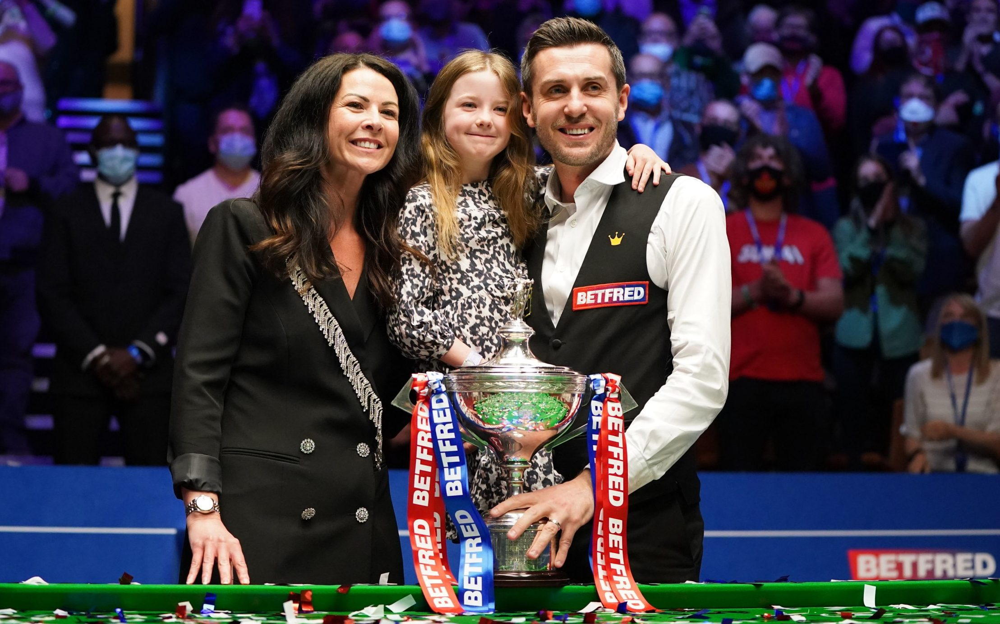
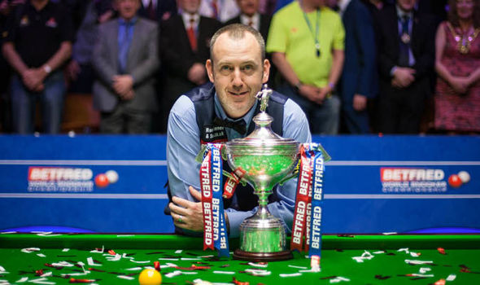

Many players participate different tournaments every year and only a few of them
win almost all competitions. There are three tournaments known as Triple Crown which are each players dream to win.
Among these three, World Championship is the most precious title to win.
The most important tournaments by value:
World Championship
UK championship
Masters championship
Shanghi open
English open
You can find any information about events and tournaments on WST
The list of players with the most titles
If you want to jump to a specific section, click on the links below:
It can only be one name. Any remaining lingering doubt was put to rest when the Rocket matched Hendry's seven world titles in 2022. With the most Triple Crown trophies, the most ranking titles, the most century breaks made, and unquestionably the greatest natural talent we've seen, Ronnie O'Sullivan is the best snooker player of all time. His longevity has seen him win major titles across four different decades, and in 2023 he was still ranked as snooker's world’s number one.

snooker world champion 2022
The King of the Crucible featured in all but two World Championship finals between 1990 and 1999, capturing a modern-day record of seven titles in Sheffield. At the Masters, a tournament boasting the game's top 16 ranked players, Hendry's first five appearances ended with the trophy in his hands. Unsatisfied by just winning, Hendry wanted to destroy his opponents.

Stefen Hendry World Champion 1997
Between 2014 and 2021, Mark Selby won four out of the eight World Championships that were staged at the Crucible Theatre. A master of brinkmanship, the Leicester man has established a reputation as being one of the hardest players to beat. Sustained periods of dominance in the sport have been rare in the last couple of decades, but Selby's feat during the 2010s of ending seven seasons in a row – in what was one of the sport's most competitive eras – as the world no.1 speaks for itself.

Mark Selby snooker world champion 2014
Mark Williams will have you believing otherwise, but there's no denying the Welshman's achievements in the game. A three-time world champion, Williams has won seven Triple Crown titles – the series of majors comprising the World and UK Championships in addition to the prestigious Masters. Indeed, there were periods at the start of the 2000s when Williams was unbeatable in the most important events. Still going strong, he won the British Open in 2023 at the age of 48.

Mark Williams world champion 2005
For almost two decades, Neil Robertson has been one of the most consistent and prolific winners on the main tour. It's a mystery to many that he has only got his hands on the World Championship trophy once. However, the Australian has won the UK Championship three times, the Masters and Champion of Champions twice, and the former world no.1 boasts more than 20 ranking trophies in his collection overall.